Applications developed in little hours¶
Ring is a new programming language that focuses on the Natural Language Programming and Declarative Programming paradigms and will let you think different about programming and how to solve your problems in a better way. It’s just released in 2016.01.25! In little days we got thousands of downloads and many developers started learning and using the language. Their feedback are the secret behind the language progress and success. They said that Ring is powerful, beautiful and easy to learn, Some of them provided good examples about what can be done using Ring in little hours. They are very happy with the language productivity.
Quotes about Ring¶
- “I like Smalltalk very much but now I like Ring better!”
- , Gal Zsolt (Hungary)
- “I find the language and its syntax very natural and easy to follow.”
- , Bhudda (United States)
- “Very nice approach for a new language.”
- , Matth Moestl (Austria)
- “Very interesting! I will keep an eye on it.!”
- , Eslipak (Argentina)
- “I’d like to see some benchmarks. Otherwise, at first glance, it looks really promising.”
- , Alex Deva (Sweden)
- “Excellent”
- , Liju Sankar (United States)
- “I wish you the best with this project.”
- , David O’Neil (United States)
- “Just fantastic.”
- , Jose Antonio (Mexico)
- “This looks like it was developed by some very competent people.”
- , Jim Clack (United States)
- “The Ring programming language seems pretty interesting so far.”
- , Eric Johnson (United States)
- “Thank you for this awesome language and wonderful ready to use Qt binding.”
- , Martial FAESSEL
- “I think it’s great what he does for the community of developers and novice programming.”
- , Marino Esteban
- “Ring is just awesome. The language is so cool and fluent. I am sure it’s going to be BIG.”
- , Ahmed Zain
- “What a proud, really wish you Eng. Mahmoud Samir and Your Team moving forward ^_^
- and from now , considered me a big fan of the Ring programming language.”
- , Zainab Mahmoud
- “Well guys I love this language and it appears that you have created perfect language.”
- , Moemen Ghulmi
- “Good work Mahmoud, I’ve installed ring pl, and it’s very perfect language.”
- , Ahmed Omar (Egypt)
- “Thanks for this great startup programming language. I wish you best of luck.”
- , Elkhouaja Khalid
- “Congratulations! I am very happy and I wish you Success and good luck.”
- , Abobasmla Hassan
- “Good Features of multi-use language on the Web, Mobile and Desktop.”
- , Abdelrhman Haider
- “Very interesting effort.”
- , Giannakakis Kostas (Greece)
“I am too lazy to open comment window and write message. But in your case I must say “Perfect” Really, create new remarkable language like your Ring is really perfect job. Even create editor for your language in your language with only few rows... Even noticed in rosettacode.org !
I read your previous articles and I tried these examples a few days ago and I will continue. I love Ring.
P.S.: Anders Hejlsberg, Niklaus Wirth, Bjarne Stroustrup, Ada Lovelace Hall of fame is waiting....”
, Martin Nedopil (Czech Republic )
“Ring seems very attractive to me through its very easy design and the Qt bindings. I like its declarative approach and the generous documentation.”
, Shalok Shalom (Austria)
- “Ring (and plenty of extension library + Qt) is wonderful.”
- , Kovacs Attila (Hungary)
“Since two days I’m trying Ring and I’m really impressed, in add to power commands and easy use, it’s really very efficient and very fast.
Each day I hope to find the couple of the year PWCT+RING ... Maybe for my Christmas gift!!!! HO HO HO HO
- Continue your fantastic job and congratulations.”
- , Jose Le Roux (France)
“I was taking a tour around Rosettacode and have found Ring. I like the syntax a lot. It’s clean and easy to understand. It looks like a very clean BASIC dialect without sigils. I can say that this is the easiest and the most BASIC-like language I’ve ever tried.”
, Tomaaz
- “Thanks for this wonderful language”
- , Vinod kc (India)
- “Very enlightening. good job!”
- , Southmountain (United States)
- “The thing I liked was the loop exiting”
- , Leon de boer (Australia)
- “An outstanding and easy language to program with.”
- , Kenneth Burgo (Philippines)
- “I chose your language as I feel I can understand it better than other languages”
- , Harry Singh
- “I like the totality of the language, far more features than expected and the freedom of expressiveness is unique.”
- , Evikone
- “Thank you very much Mahmoud! I am using ring for many experiments and so far I love it.
- I really want to continue using ring and contribute what I can.”
- , John (SienSystem)
- “Thanks for your effort. I took a quick look and found it interesting.
- You are trying to follow more or less like Clipper with simple command and no rigid declaration rules. Good.”
- , Anand Gupta
- “Sir, Very Good”
- , Kamlesh Patel
- “There are 3 different styles, it looks like Python and C”
- , 64remy
- “That’s more than a “cool” syntax, the example of writing free-form text between
curly-brackets such that each word calls a function. Which could be interesting (A syntax like that would be nice for declaring text styles)”
, LaurieCheers- “If you browse around you see they have listed 160 contributors.
This year they have entered Top 100 in the TIOBE index. Lot of effort seem to have been made to make this language pop out and catch the attention of masses.”
, Htuhola- “I like the idea of The Ring being in ANSI C
- it’s an impressive creation, and a lot of skill went into it”
- , Garry Taylor
- “Very innovative language! Syntactically clean”
- , CodeProject Member
“The author must be commended for the readily-obvious hard work and effort that has gone into creating a rich ecosystem for his language. It seems that the language is quite extensive as well. I would find it useful to see a BNF grammar and concise coverage of its semantics.”
, Xx-Leninist-1917-Xx (Reddit)
- “I can see the AI of the future using this technology to solve computational problems for..... the humans.”
- , Cryptonite (United States)
- “I like your programming language, I like you are going to develop mobile app using RingQt and also
- I appreciate your web library.” , Domenico D’Oria (Italy)
FetchStockData Application¶
URL : https://groups.google.com/forum/#!topic/ring-lang/-fa1U_SXSjo
Author : Bert Mariani
This App is written in Ring.
It will fetch stock data from Yahoo and draw various types of charts. Any valid stock ticker can be entered, or selected from the drop down list - Select Symbol.
It will not guarantee that you make money in the stock market. But it will visualize the history of the stock.
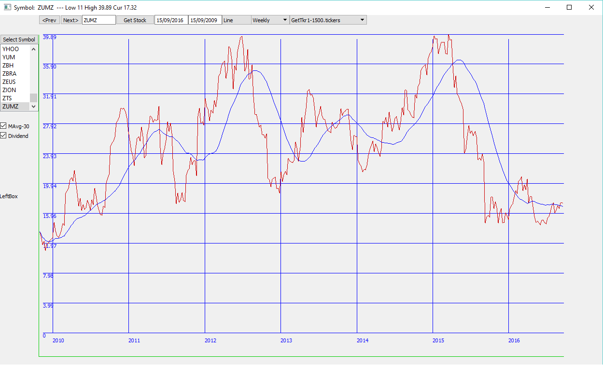Fifteen Puzzle Game¶
URL : https://github.com/CalmoSoft/CalmoSoft-Fifteen-Puzzle-Game/blob/gh-pages/CalmoSoftPuzzle.ring
Author : Gal Zsolt (CalmoSoft)
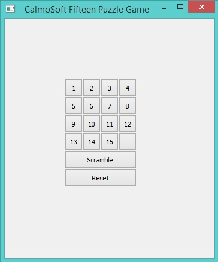{kind=link}
TicTacToe Game¶
URL : https://github.com/AbdelrahmanGIT/RingSamples/blob/master/src/TecTacToe.ring
Author : Abdelrahman Mohammed
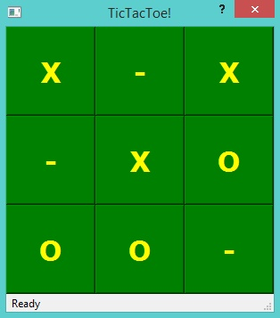{kind=link}
Squares Puzzle Game¶
URL : https://github.com/MajdiSobain/RingAllegro_SquaresPuzzle
Author : Majdi Sobain
This project is about (Squares Puzzle) popular game that I have programmed using ring language with its RingAllegro Library. The principle of this game is very known to all of us, which is moving squares to get the real full shape of the original picture.
This game could be played using mouse and keyboard as well, showing a message of congratulations at the successful solving.
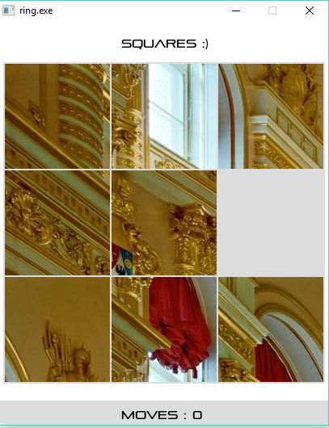{kind=link}
Analog Clock¶
URL : https://github.com/ring-lang/ring/blob/master/applications/analogclock/AnalogClock-Image.ring
Author : Bert Mariani
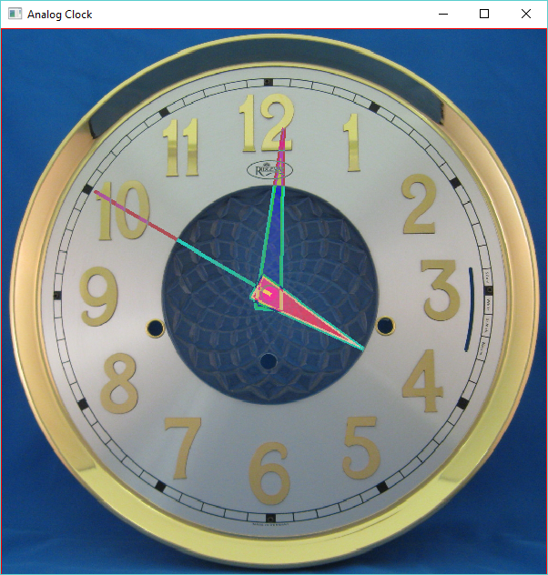Werdy Application¶
URL : http://werdy.info
Source Code : https://github.com/magdy-ragab/werdy
Author : Magdy Ragab
Quran application includes reading suras, searching and bookmarking.
The applcation is provided for Windows, Linux and Android.
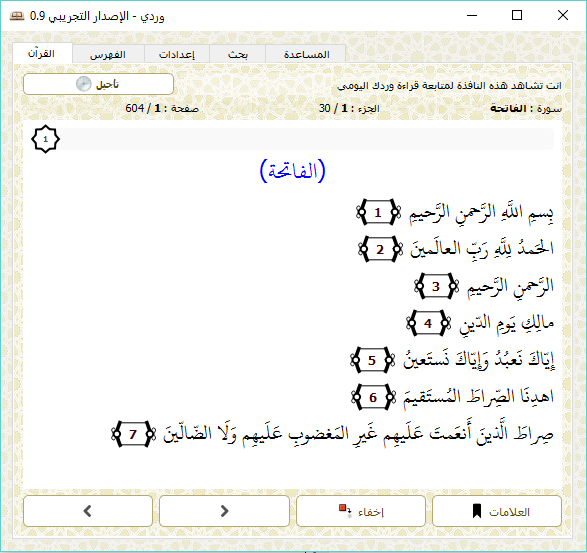{kind=link}
Fifteen Puzzle Game 2¶
Author : Gal Zsolt (CalmoSoft)
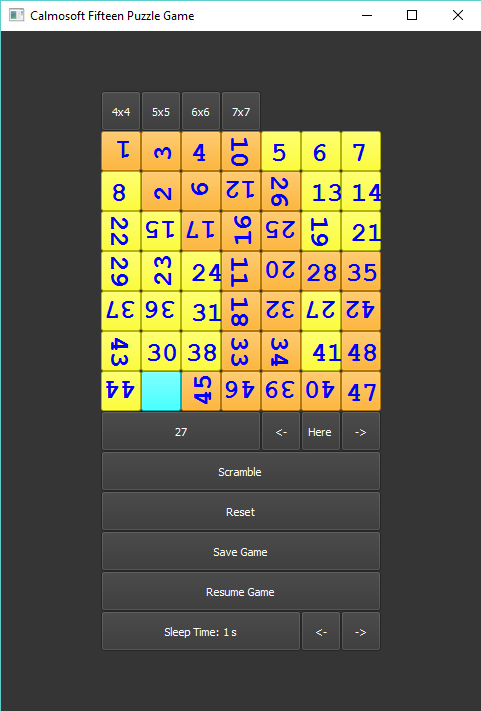Samples in this book¶
The next samples are developed in little hours and we will introduce them through this book.
The next screen shot for he Ring Notepad application
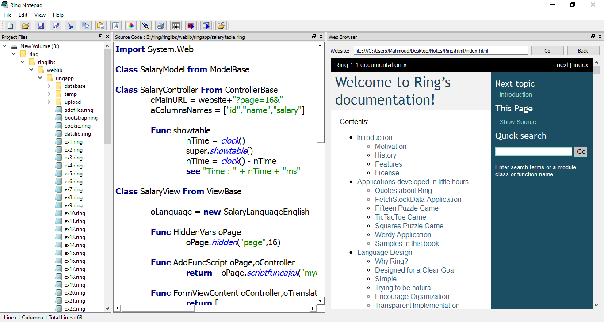The next screen shot for the Cards Game
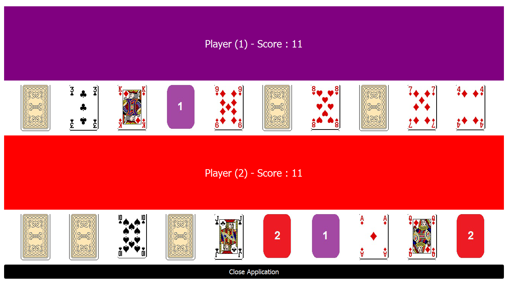The next screen shot for the Cards Game (Android)
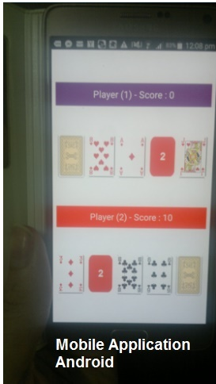The next screen shot from the Web Development chapter
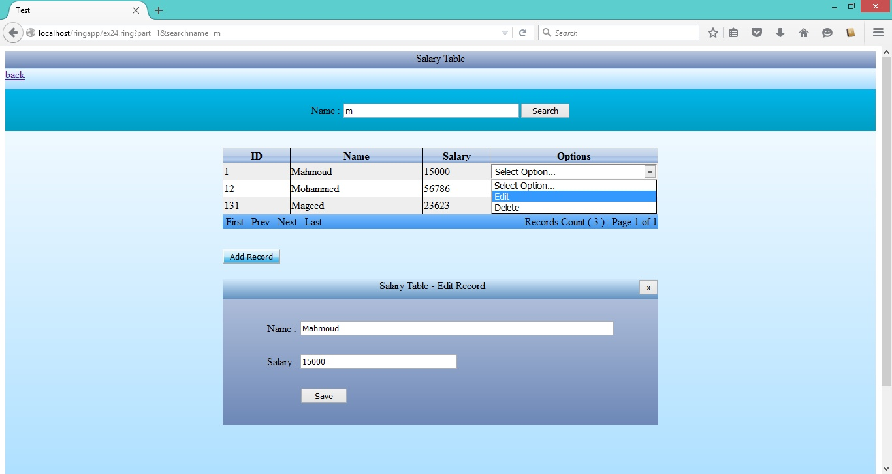The next screen shots for simple 2D Games that we will present in the Game Engine Chapter.
Stars Fighter Game
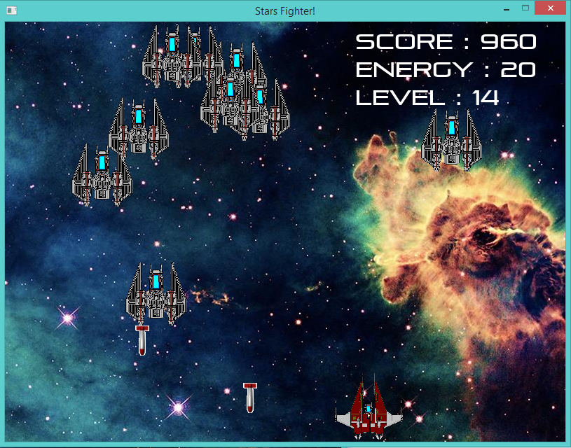{kind=link}
Flappy Bird 3000 Game
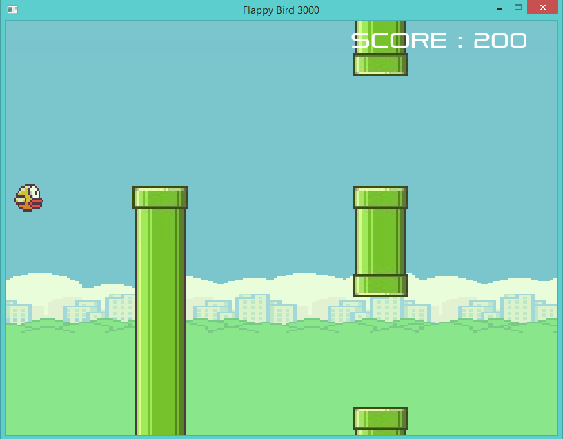{kind=link}
Super Man 2016 Game
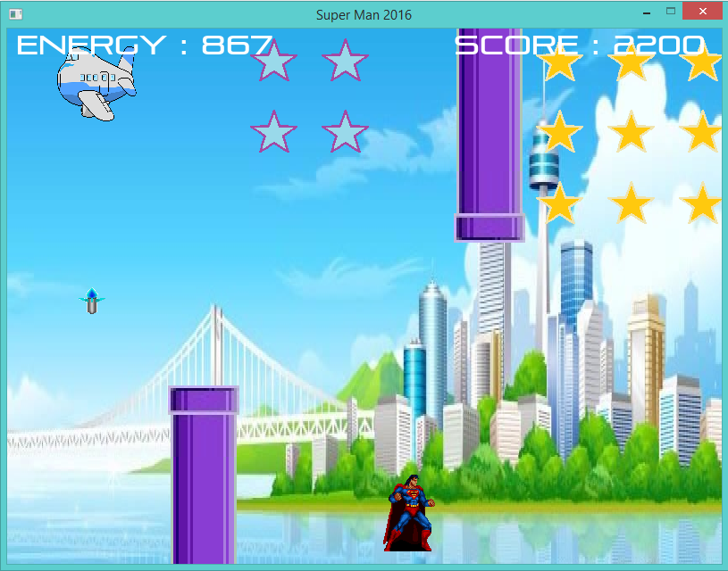{kind=link}